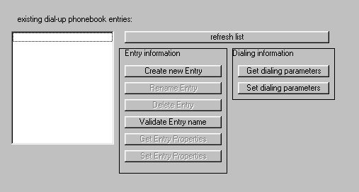

Dial-up networking for Visual Basic
provided by: Andreas Schubert (eMail: andy@andreas-schubert.net)
Recently many people asked about using dial-up networking in their programs.
Fact is, there is not much information available about this, and it seemed to me that the questions were not answered sufficient enough. With my last project I had to deal with this problems too, so I decided to write a nifty class for dealing with dun.
Dial-up networking with VB is pretty easy, once you have translated all the required data structures for the api-functions (which I have done for you). The remaining part mostly consists of calling some functions and handling return values. For this, I created the small sample project.
You have the royalty-free right to use the source provided with this article in your applications.
You may also distribute the source, as long as you leave the original disclaimer unaltered.
I take no responsibility for any damage through the use of my code!
I would be glad if you dropped me a note in which project you used it.
Also, if you got questions, change something or find a bug, please send me a message and a copy of your altered code to andy@andreas-schubert.net
Please visit my new homepage at www.andreas-schubert.net. It will get completed in a view days.
I am truly sorry for the -not so long - sample project, but I've got loads of work to do.
So, If you have any questions, feel free to send me a mail, I will try to answer all questions!
So much for this. Now on with dial-up networking:
Sample project:

Phonebook entries
|
Dialing information
(
|
Dialing
|
Connection information
|
Projections
|
Devices
|
Windows dialogs
|
Other
|
Stats
There can be received a lot of statistics, like bytes transmitted or received etc. However, this is platform dependend and very time consuming to develop. So, I let this be for now, maybe if enough people ask for it, I will develop some routines for it.